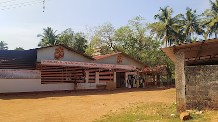
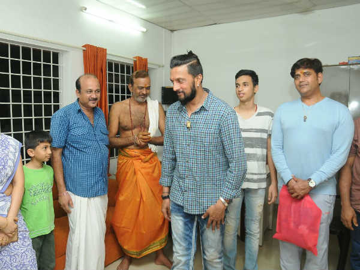
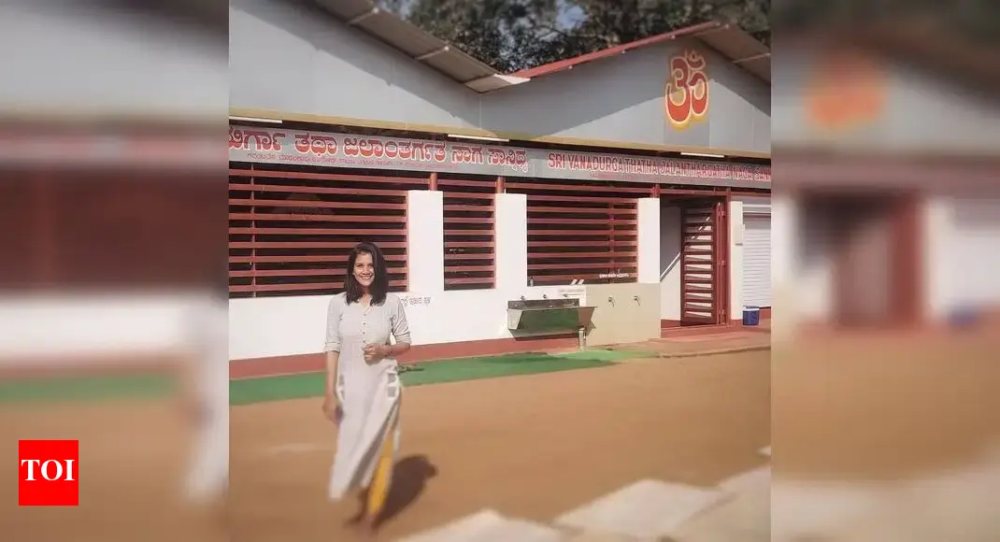
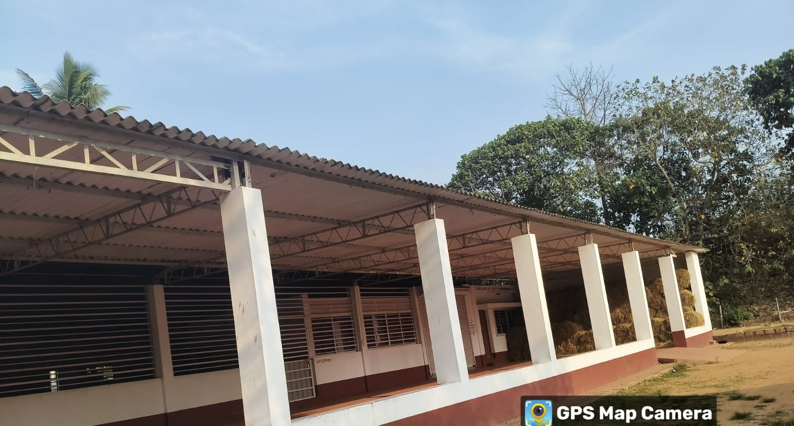

📍 Location
Near Modankapu, Denthadka, BC Road, Bantwal Taluk, Dakshina Kannada, Karnataka – 574219
~2–3 km from BC Road on NH-48 (Mangalore–Bangalore Highway)

Near Modankapu, Denthadka, BC Road, Bantwal Taluk, Dakshina Kannada, Karnataka – 574219
~2–3 km from BC Road on NH-48 (Mangalore–Bangalore Highway)
Goddess Vanadurga and Jalanthargatha Naga are the primary deities. Lord Ganapathi and Lord Shastara are also worshipped.
The temple was rediscovered in 2001 and restored under the guidance of Sri Raghaveshwara Bharati Swamiji of Ramachandrapura Math. A Brahmakalasha Mahotsava was held in 2005.
- Two poojas daily (morning and evening)
- Free lunch prasadam (Annasantharpana) served every afternoon
- Temple and Goshala maintained by two staff members
- Over 20 cows housed in the temple’s Goshala
The temple celebrates an annual festival during Karthika Masa with special rituals and community events.



